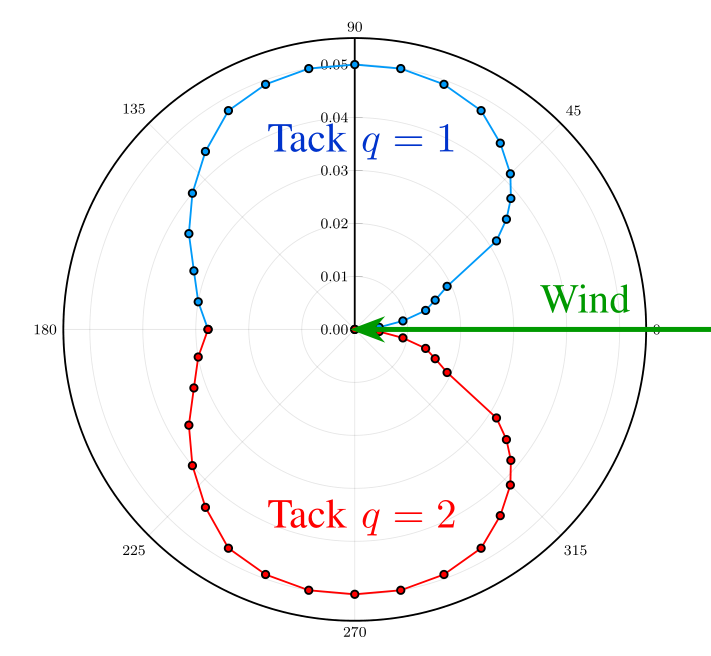

Examples of Sailing in Stochastic Weather
These examples are from a paper-in-progress: C. Miles and A. Vladimirsky, "Stochastic Optimal Control of a Sailboat"
In all of our examples:
- The domain is a circular disk of radius \(R = 2\).
- The \( (r, \theta) \) state space is discretized as a \(1601 \times 2012\) grid.
- We use the polar speed profile shown to the right, which is the profile of the "Sunodyssey 40" obtained from this site.
- Allowed control angles \(u\) are only the provided angles (dots) of the polar speed profile.
- Our row-wise Gauss-Seidel sweeping method is used. I.e. time discretizations are chosen at each gridpoint and control value as \(\tau = \Delta r / \dot{r}(r, \theta, q, u)\).
- In the movies, six boats are initialized at positions \((r, \theta) \in \{(1.8, 0.0), (1.93, 0.39), (1.93, -0.39)\}\), with the two boats at each position starting on different tacks \(q \in \{1, 2\}.\)

Example 1 (Fully Deterministic):
- \(\sigma = 0.0\)
- \(a = 0.0\)
Example 2 (Moderate Diffusion, Zero Drift):
- \(\sigma = 0.1\)
- \(a = 0.0\)
Example 3 (Weak Diffusion, Weak Drift):
- \(\sigma = 0.05\)
- \(a = 0.05\)
Example 4 (Weak Diffusion, Strong Drift):
- \(\sigma = 0.05\)
- \(a = 0.15\)